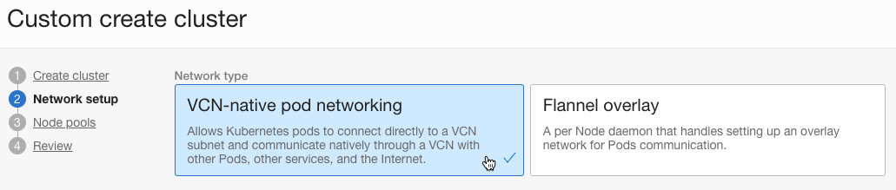
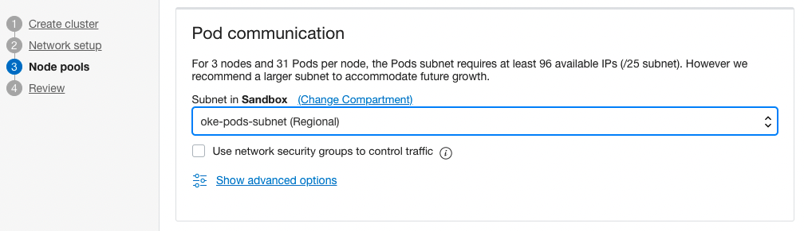
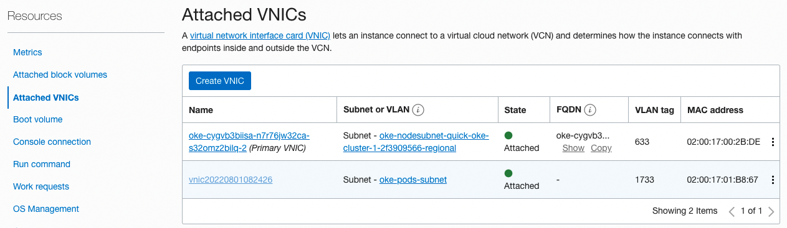
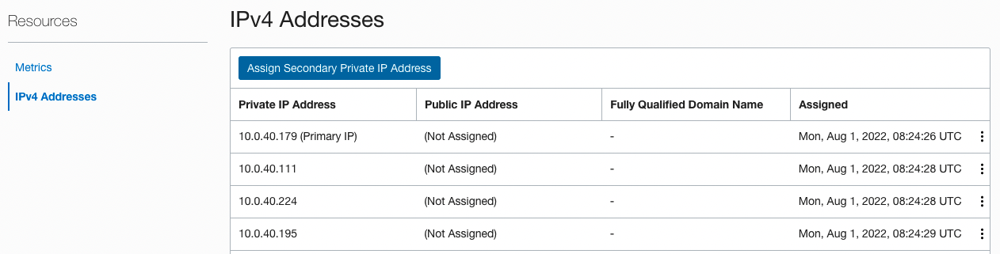

Support for VCN-native pod networking
- Release Notes - Support for VCN-native pod networking
- Blog - Announcing VCN-native pod networking for Kubernetes in OCI
업데이트 사항
OKE에서는 기존에 CNI로 flannel만 지원하였습니다. VCN내에 Pod를 위한 가상의 overlay 네트워크를 두는 방식입니다. 이제 VCN-Native Networking을 지원하여, Pod가 VCN Subnet을 직접 사용합니다.
-
OKE에서 제공하는 CNI 비교
-
출처 - Blog - Announcing VCN-native pod networking for Kubernetes in OCI
-
Flannel overlay networking
- flannel overlay 네트워크를 사용하면, 그림처럼 가상의 POD Network가 만들어지고, 생성되는 pod들은 해당 대역의 IP를 할당받습니다. 그리고 다른 Worker Node에 있는 pod와 통신하기 위해서는 왼쪽 아래와 같이 Worker Node IP로 감싸져서 대상 Worker Node로 전달후 대상 Pod IP로 전달됩니다.
-
VCN-Native pod networking
- VCN-Native pod 네트워크를 사용하면, 그림처럼, 생성되는 pod들은 지정한 VCN상의 Subnet 상의 IP를 할당받습니다. 그리도 다른 Worker Node에 있는 pod와 통신하기 위해 VCN 네트워크를 직접사용합니다. 그래서 VCN상의 다른 VM에서도 해당 IP로 접근이 가능합니다. 또한 VCN 관련 네트워크 설정, 모니터링 툴을 그대로 사용 가능합니다.
-
VCN-Native Pod Networking
관련 네트워크 자원 만들기
아래 설정은 Quick Create 모드에서 자동으로 생성되는 VCN 관련자원에서 추가되는 부분만 설명합니다.
- 예시, CIDR Block
State Source Kubernetes API Endpoint 10.0.0.0/28 Worker Nodes 10.0.10.0/24 Load Balancers 10.0.20.0/24 Pods 10.0.40.0/24
Security Rules 추가 및 만들기
전체 필요한 보안 규칙은 공식 문서를 참조합니다.
-
Kubernetes API Endpoint의 기존 Security Rules에 추가 규칙
-
Ingress Rules
State Source Protocol/Dest. Port Description Stateful Pods CIDR TCP/6443 Pod to Kubernetes API endpoint communication (when using VCN-native pod networking). Stateful Pods CIDR TCP/12250 Pod to Kubernetes API endpoint communication (when using VCN-native pod networking). -
Egress Rules
State Destination Protocol/Dest. Port Description Stateful Pods CIDR ALL/ALL Kubernetes API endpoint to pod communication (when using VCN-native pod networking). Stateful Worker Nodes CIDR TCP/12250 Kubernetes API endpoint to worker node communication (when using VCN-native pod networking).
-
-
Worker Nodes의 기존 Security Rules에 추가 규칙
-
Ingress Rules
State Source Protocol/Dest. Port Description Stateful Pods CIDR ALL/ALL Allow pods on one worker node to communicate with pods on other worker nodes (when using VCN-native pod networking). Stateful Kubernetes API Endpoint CIDR TCP/12250 Kubernetes API endpoint to worker node communication (when using VCN-native pod networking). -
Egress Rules
State Destination Protocol/Dest. Port Description Stateful Pods CIDR ALL/ALL Allow worker nodes to communicate with pods on other worker nodes (when using VCN-native pod networking).
-
-
Pod 서브넷을 위한 Security Rule 신규 생성
-
Name: 예) oke-pods-seclist
-
Ingress Rules
State Source Protocol/Dest. Port Description Stateful Kubernetes API Endpoint CIDR ALL/ALL Kubernetes API endpoint to pod communication (when using VCN-native pod networking). Stateful Worker Nodes CIDR ALL/ALL Allow pods on one worker node to communicate with pods on other worker nodes. Stateful Pods CIDR ALL/ALL Allow pods to communicate with each other. -
Egress Rules
State Destination Protocol/Dest. Port Description Stateful Pods CIDR ALL/ALL Allow pods to communicate with each other. Stateful All Services in Oracle Services Network ICMP 3,4 Path Discovery. Stateful All Services in Oracle Services Network TCP/ALL Allow worker nodes to communicate with OCI services. Stateful Kubernetes API Endpoint CIDR TCP/6443 Pod to Kubernetes API endpoint communication (when using VCN-native pod networking). Stateful Kubernetes API Endpoint CIDR TCP/12250 Pod to Kubernetes API endpoint communication (when using VCN-native pod networking). -
optional egress rules
State Destination Protocol/Dest. Port Description Stateful 0.0.0.0/0 TCP/ALL (optional) Allow worker nodes to communicate with internet.
-
Pod 서브넷 만들기
- 아래 정보를 기준으로 서브넷을 추가 생성합니다.
- Name: oke-pods-subnet
- Subnet Type: Regional
- CIDR Block: 10.0.40.0/24
- Route Table: oke-private-routetable-~~~
- Subnet Access: Private Subnet
- Dhcp Options: default
- Security Lists: oke-pods-seclist
OKE 클러스터 만들기
-
오라클 클라우드 콘솔에서 OKE 클러스터 생성 메뉴로 이동합니다.
-
Custom create 방식으로 클러스터를 만듭니다.
-
Network setup
- Network Type에서 VCN-native pod networking을 선택합니다.

- 나머지 항목은 해당 서브넷을 지정합니다.
-
Node pools
-
Pod communication에서 앞서 새로 만든 Pods 서브넷을 지정합니다.

-
나머지는 필요한 값을 지정합니다.
-
-
입력한 정보로 클러스터를 생성합니다.
결과 테스트
구성 정보 확인
-
다음 명령으로 VCN-Native Pod Network 정보를 확인합니다.
kubectl get NativePodNetwork-
결과 예시
- Worker Node 갯수 만큼 자원이 보입니다.
$ kubectl get NativePodNetwork NAME STATE REASON an4w4ljrvsea7yic6abavw2aef6d6ap3em6ghx6ik7lbbeli5qtazjjqslza SUCCESS COMPLETED an4w4ljrvsea7yic6mnz7upb5pw4vxe7z3a3xdflzq4njtwcogmi2wkz4bcq SUCCESS COMPLETED an4w4ljrvsea7yiclt6upymxrdpnhaaeqtemijovs5r3gkpm66aiidudwzkq SUCCESS COMPLETED- 그 중 하나를 조회하면, 관련 정보를 확인할 수 있습니다.
- Metadata.Owner References.Name: 대상 Worker Node, 예) 10.0.10.149
- Status.Vnics.Addresses: 사전 확보한 Pod 서브넷의 31개 IP 목록
- Status.Vnics.Subnet Cidr: Pod 서브넷의 CIDR, 예) 10.0.40.0/24
$ $ kubectl describe NativePodNetwork an4w4ljrvsea7yic6abavw2aef6d6ap3em6ghx6ik7lbbeli5qtazjjqslza Name: an4w4ljrvsea7yic6abavw2aef6d6ap3em6ghx6ik7lbbeli5qtazjjqslza Namespace: Labels: <none> Annotations: <none> API Version: oci.oraclecloud.com/v1beta1 Kind: NativePodNetwork Metadata: Creation Timestamp: 2022-08-01T08:23:43Z Generation: 1 Managed Fields: API Version: oci.oraclecloud.com/v1beta1 ... Owner References: API Version: v1 Kind: Node Name: 10.0.10.149 UID: 3abe2f1e-3e7f-4d6d-8720-d7df76f038ef Resource Version: 1291 UID: 55cbf861-04b8-4536-8a41-3ce051f5d482 Spec: Id: ocid1.instance.oc1.ap-chuncheon-1.an4w4ljrvsea7yic6abavw2aef6d6ap3em6ghx6ik7lbbeli5qtazjjqslza Max Pod Count: 31 Pod Subnet Ids: ... Status: Reason: COMPLETED State: SUCCESS Vnics: Addresses: 10.0.40.102 10.0.40.195 10.0.40.23 10.0.40.7 10.0.40.65 10.0.40.133 10.0.40.157 10.0.40.46 10.0.40.122 10.0.40.69 10.0.40.208 10.0.40.80 10.0.40.225 10.0.40.9 10.0.40.116 10.0.40.237 10.0.40.121 10.0.40.146 10.0.40.49 10.0.40.17 10.0.40.45 10.0.40.111 10.0.40.224 10.0.40.196 10.0.40.188 10.0.40.67 10.0.40.26 10.0.40.4 10.0.40.153 10.0.40.231 10.0.40.86 Mac Address: 02:00:17:01:B8:67 Router Ip: 10.0.40.1 Subnet Cidr: 10.0.40.0/24 Vnic Id: ocid1.vnic.oc1.ap-chuncheon-1.ab4w4ljrve4z6xyu2vw62xsax6lwmhnvdtxhpdbrwqypsqfiq4qkezeqt5eq Events: <none>
-
-
Worker Node 컴퓨트 인스턴스 확인
-
인스턴스에 붙은 VNIC을 보면 아래와 같이 2개가 보입니다. Primary VNIC은 Worker Node 서브넷이며, 두번째는 Pods 서브넷입니다. 앞서 OKE 클러스터에서 확인한 MAC 주소가 동일합니다.

-
두 번째 VNIC의 상세 정보에 사전 확보한 31개 IP 목록을 동일하게 확인할 수 있습니다.

-
Pod 배포 테스트
-
테스트용 앱인 nginx 를 배포합니다.
kubectl create deploy nginx --image=nginx -
결과 확인
IP가 10.0.40.23으로 Pods 서브넷 상의 IP입니다.
$ kubectl get pod -o wide NAME READY STATUS RESTARTS AGE IP NODE NOMINATED NODE READINESS GATES nginx-85b98978db-8prsc 1/1 Running 0 2m11s 10.0.40.23 10.0.10.149 <none> <none> -
Pod IP로 접근 확인
VCN내 서브넷의 IP를 직접 할당 받았기 때문에, Pod 서브넷에 접근 가능한 네트워크에서 아래와 같이 Pod의 IP로 직접 연결이 가능합니다. 물론 Pod의 재생성에 따라 IP는 유동적이고, 현재 VCN Private Subnet에서 고정 IP를 지원하지 않기 때문에 Pod IP로 직접 연결하는 것은 올바른 방법은 아닙니다.
[opc@jumpbox ~]$ curl http://10.0.40.23 <!DOCTYPE html> <html> <head> ... </head> <body> <h1>Welcome to nginx!</h1> ... </body> </html> -
LoadBalancer 타입의 서비스를 만듭니다.
$ kubectl scale deploy nginx --replicas=2 deployment.apps/nginx scaled $ kubectl expose deploy nginx --name=nginx-svc --port=80 --type=LoadBalancer service/nginx-svc exposed $ kubectl get pod,svc -o wide NAME READY STATUS RESTARTS AGE IP NODE NOMINATED NODE READINESS GATES pod/nginx-85b98978db-8prsc 1/1 Running 0 44m 10.0.40.23 10.0.10.149 <none> <none> pod/nginx-85b98978db-g9w9s 1/1 Running 0 2m26s 10.0.40.47 10.0.10.101 <none> <none> NAME TYPE CLUSTER-IP EXTERNAL-IP PORT(S) AGE SELECTOR service/kubernetes ClusterIP 10.96.0.1 <none> 443/TCP 74m <none> service/nginx-svc LoadBalancer 10.96.26.147 144.24.xx.xxx 80:32163/TCP 93s app=nginx -
생성된 LoadBalancer로 서비스가 되는 것을 알 수 있습니다.
$ kubectl describe svc nginx-svc Name: nginx-svc ... LoadBalancer Ingress: 144.24.xx.xxx Port: <unset> 80/TCP TargetPort: 80/TCP NodePort: <unset> 32163/TCP Endpoints: 10.0.40.23:80,10.0.40.47:80 ... $ curl http://144.24.90.247 <!DOCTYPE html> <html> <head> ... <body> <h1>Welcome to nginx!</h1> ... </body> </html>
이 글은 개인으로서, 개인의 시간을 할애하여 작성된 글입니다. 글의 내용에 오류가 있을 수 있으며, 글 속의 의견은 개인적인 의견입니다.